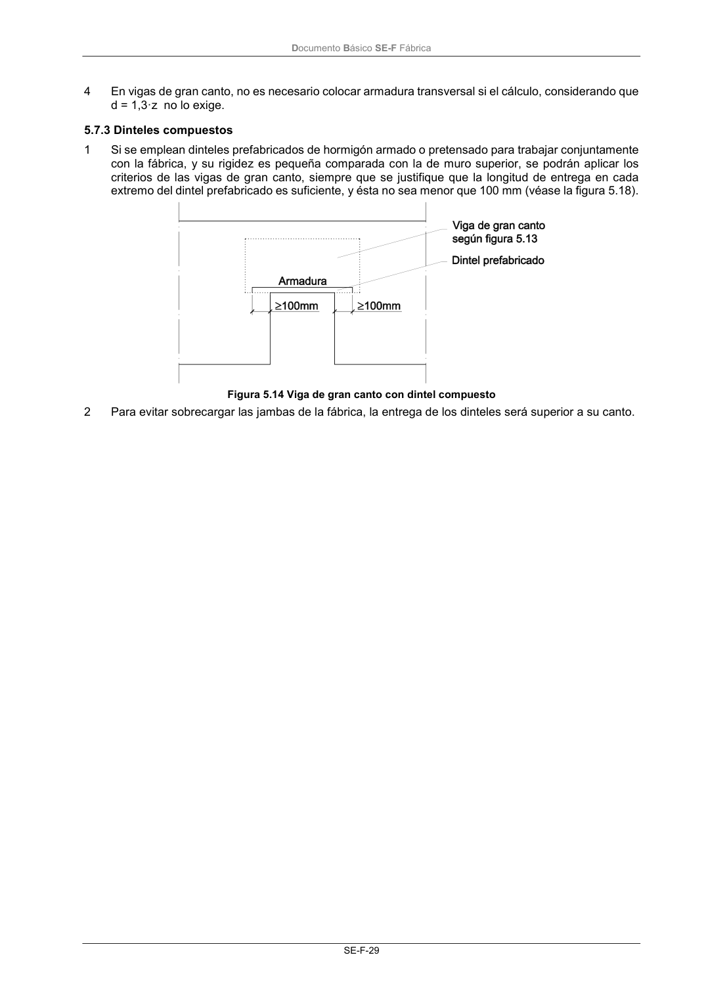

DB-SE-F Fábrica · edición 2019-12-20 · capa oficial
Documento DB-SE-F-oficial · SHA-256 del PDF e3e0805c3b4c307519c26dc34c3fdbf143d842edd013c91b0f52d2c73403d91c
Copia fiel del PDF fuente · Fuente oficial
Ficha de la disposición en la fuente oficial
Formatos: JSON del segmento · Markdown
5.7 Vigas de gran canto 5.7.1 Análisis 5.7.1 Análisis 1 Se consideran vigas de gran canto las que tienen una luz libre inferior al doble del canto. 2 La luz de cálculo se medirá con la regla de las de las vigas, pero sin superar 1,15 veces la luz libre, y como brazo mecánico, z, se tomará el valor: z = 0,4 h + 0,2 Ld < 0,7 Ld (5.36) donde h es la altura libre del paño de muro que forma la viga. 3 Se comprobará la posible inestabilidad por pandeo de la zona comprimida de la viga de gran canto si no está arriostrada, y la resistencia a compresión en las sustentaciones. 4 En el cálculo se considerarán todas las cargas que se aplican en la parte adintelada del muro, a menos que puedan transmitirse hacia otros elementos, gracias al efecto de los forjados superiores comportándose como tirantes. El método de cálculo que se propone no permite considerar cargas aplicadas dentro del canto útil de la viga. 5 Si la continuidad lateral del muro permite contrarrestar empujes, para el cálculo se podrá usar el criterio de que la parte de muro superior que carga sobre la viga es la contenida en un arco parabólico de una flecha igual al 0,6 de la luz libre del mismo. 6 Para determinar la armadura necesaria, una viga de gran canto aislada se considerará como biapo- yada, según la figura 5.13. 5.7.2 Capacidad resistente 1 La capacidad resistente de la viga de gran canto se limita a 0,4·fd·b·d2, tomando d = 1,3 z 2 Además de la armadura principal, si no hay sardinel, se colocarán armaduras en los tendeles , para evitar la fisuración, en una altura igual a la menor de 0,5·Ld o 0,5·d, contada desde la cara inferior de la viga. 3 La armadura será uniforme (solapándose correctamente en su caso) en toda la luz Ld, y se prolongará con la correspondiente longitud de anclaje, según el apartado 7.4.3. Figura 5.13 Viga de gran canto Documento Básico SE-F Fábrica SE-F-29 4 En vigas de gran canto, no es necesario colocar armadura transversal si el cálculo, considerando que d = 1,3·z no lo exige.
